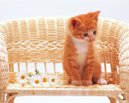

| トップページ | 子猫写真 | 子犬写真 |
| 子猫たちの写真です！ |
| 子猫の魅力は、なんといっても、その大きくてクリッとした目です。子猫も含めて、幼い動物たちの目が大きいのは、他の動物の攻撃心を減らす効果があるから、といわれています。子猫を見たとき、私たち人間は、「かわいいな子猫だな…」と思いますが、子猫を見た犬たちも同じように感じているかもしれません。 |
| 沢山遊んだなぁ お花畑の白いテーブルで一休みです。きっと、たくさん走り回って、疲れてしまったのでしょう。でも、次の興味を見つけてしまったようです。なにかをじっと見つめています。 |
|
| 一緒に隠れんぼしよう 子猫たちは、ふと気づくと、いろんなところに入り込みます。この子猫は、ちょうど良いサイズのバスケットを見つけたみたいです。次はどこに隠れようかなぁ～…。 |
|
|  | くつろぎタイム 自分専用の大好きなソファーに、ちょこんとかわいく座っています。よほどこの場所の居心地が良いのか、お行儀よくじっと座って、なかなか降りようとしないみたいです。 |